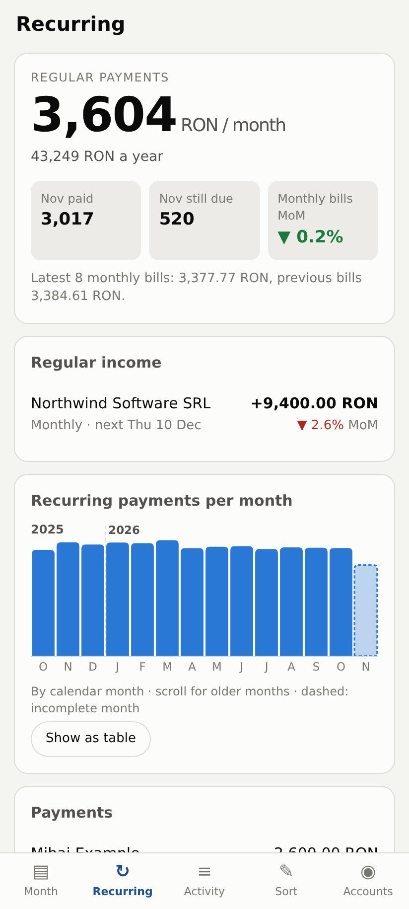

Щоденні інструменти
Spendosaurus
Плануйте великі сімейні витрати — від першої оцінки до останнього платежу.
Бачте, куди йдуть ваші гроші й що ви сплачуєте щомісяця, — з ваших власних банківських рахунків, на вашому власному сервері.
Open Banking Hub розміщується самостійно й лише читає дані: кожен запускає власну приватну копію.

Open Banking Hub, або коротко Bank Hub, — самостійно розміщений перегляд ваших власних банківських рахунків лише для читання. Він отримує ваші транзакції через PSD2 API від Enable Banking, зберігає їх у файлі SQLite на вашому комп’ютері й добре відповідає на два запитання: куди поділися мої гроші і що я сплачую регулярно?
Він лише читає дані рахунків і не містить жодного коду, здатного здійснити платіж. Приватний застосунок для телефона й ноутбука показує все пристроям, які ви зареєстрували, а MCP-сервер лише для читання дає ШІ-асистентові змогу відповідати на запитання з прихованого перегляду: категорії, суми й відомі продавці, але ніколи імена людей, IBAN чи призначення платежів.
Його створено й перевірено з Revolut, ING Romania та BRD, і він має працювати з будь-яким банком, який підтримує Enable Banking. Обмежений робочий режим Enable Banking безкоштовний для ваших власних рахунків. Open Banking Hub не пов’язаний з Enable Banking чи будь-яким банком.
Усі знімки екрана показують вигадані дані з вбудованого демо застосунку. На ноутбуці застосунок використовує ширину: бічна панель, таблиці, які можна переглядати рядок за рядком, а платіж чи одержувач відкривається поруч зі списком.





Open Banking Hub написано на Python із FastAPI та SQLite. Він працює на невеликому Linux-комп’ютері, що завжди увімкнений, з Docker Compose й опублікованим образом для amd64 та arm64 або з юнітами systemd. З телефона ви під’єднуєтеся через приватну мережу, як-от Tailscale; його не слід відкривати в публічний інтернет. Суми в іноземній валюті перераховуються за щоденним курсом Національного банку Румунії. Нічні резервні копії перевіряються на цілісність, з необов’язковими зашифрованими зовнішніми копіями через restic. Проєкт має відкритий код за ліцензією MIT.
Плануйте великі сімейні витрати — від першої оцінки до останнього платежу.

Ваші домашні камери: знайомі обличчя розпізнаються на вашому власному сервері, а спокійна хронологія показує, хто приходив.

Зрозумійте, що змінилося в компаніях, за якими ви стежите. Перегляньте свої причини.